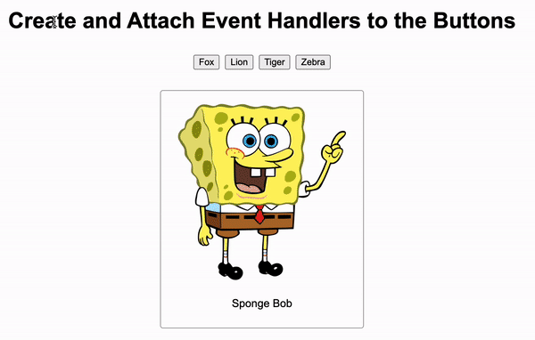
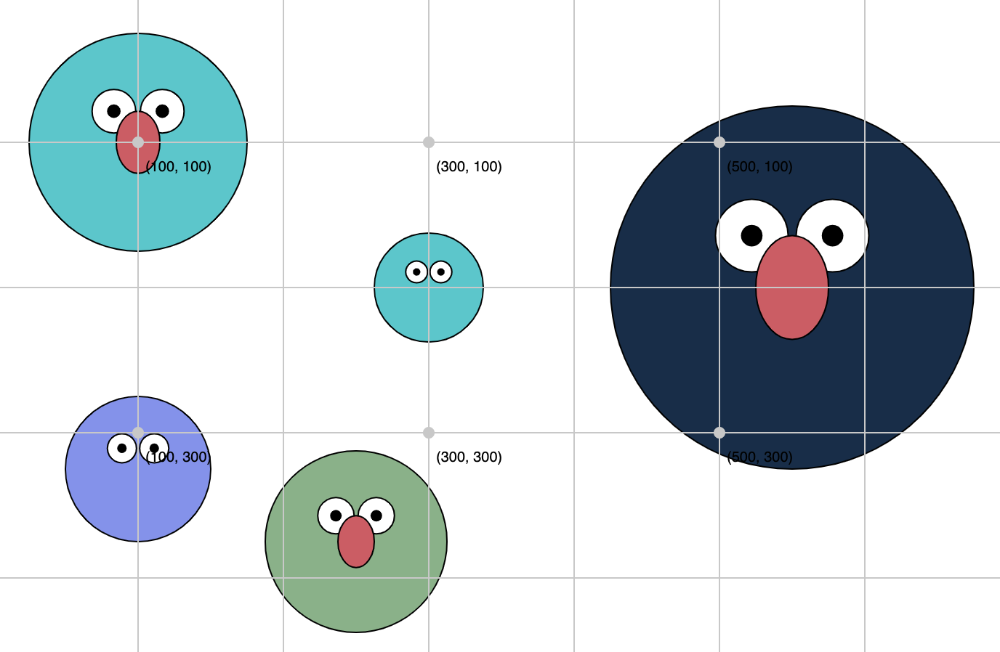

Quiz: CSS Techniques
1. Ground Rules (Please Read Carefully)
Quiz 2 is a mixture of in-class and take-home activities. You will have ~36 hours to complete it.
In-Class Exercises
The first part of the quiz will be completed DURING CLASS. You may use your notes, pen and paper, and any “cheat sheats” that you want to make. You may not use a computer. Attendance is MANDATORY.
Take Home Exercises
For the take-home portion of the quiz, you may begin working on it as soon as it is posted (Wednesday, 11/09 at 8AM). It is due on Thursday (11/10) at 11:59PM. No quizzes will be accepted after this time. For the take home portion of the quiz:
- You MAY use the course website, as well as any notes, lecture files, or internet reference materials to complete the quiz.
- You MAY NOT discuss the quiz with anyone or collaborate in any way with anyone. This is an individual assessment.
2. Study Resources
To study for the quiz, please review the following:
- Course slides, videos, readings, and sample code.
- Study Guide
- Sample Problems (for the in-class, written portion of the quiz).
Please also become very comfortable with the exercises from Tutorial 12 (for the take-home portion of the quiz).
3. Actual Quiz
A. [40pts] Written Portion (In Class)
To be administered during your regularly scheduled class time. Open notes, closed computer.
B. [60pts] Computer-Based Portion (Take Home)
Please download the starter files (below) and complete the 3 sets of tasks described below. Read the instructions that are outlined under each task very carefully. You must complete each exercise exactly as the instructions indicate to receive full credit. Otherwise, you will receive partial credit for the parts you correctly completed.
Quiz 2 Starter Files Quiz 2 Solutions
1. [20pts] DOM Manipulation
Open the exercise01 folder and add event handlers to all of the buttons. When a button is clicked, the image tag should display the corresponding animal (see the images folder), and there should be a label below the image describing the picture. When you’re done, your page should look like the animation shown below:

2. [20pts] Functions
Open the exercise02 folder and create a function called drawElmo that draws a picture of Elmo. The function should have the following parameters defined (in order):
x(number) – the x-coordinate of the center of the circle(s).y(number) – the y-coordinate of the center of the circle(s).size(number) – the diameter of the larger circle.color(number) – the color of Elmo’s face.hasNose(boolean) – whether or not Elmo should have a nose (just default the color to a reddish color).
If the argument for hasNose is set to true, a nose is drawn. Otherwise, no nose is drawn. A decent looking nose can be made with the ellipse function…
fill('#db5461');
ellipse(500, 500, 70, 100); // x, y, width, height (but yours needs to scale)
…but of course yours will need to be dynamically positioned / scaled according to the function arguments (just like you’ve been doing for the past several weeks).
When I invoke your function as follows (within the setup() function)…
drawElmo(100, 100, 150, '#0bc9cd', true); // nose drawn
drawElmo(300, 200, 75, '#0bc9cd', false); // no nose drawn
drawElmo(100, 325, 100, '#8093f1', false); // no nose drawn
drawElmo(250, 375, 125, '#7fb285', true); // nose drawn
drawElmo(550, 200, 250, '#102e4a', true); // nose drawn
…the image pictured below should be drawn to the screen:

3. [20pts] Loops + Conditionals
Open the exercise03 folder. Inside of main.js, write a program, using any kind of loop you want, that draws all of the pictures to the screen where the is_favorite property is set to true. You don’t have to worry about formatting (the CSS), so long as following 8 images are displayed:
Hints
- Loop through the
photosarray. - If the current photo’s
is_favoriteproperty is set to true, append an image element (imgtag) to the<div class="images"></div>container. - Consider using a template literal.
- Partial credit will be given.
What to Submit
Please doublecheck to make sure you’ve completed the 3 tasks described above. When you’re done:
- Zip your entire
quiz02folder that contains a COMPLETED version of the tasks. In other words, don’t accidentally submit the starter files or you will not receive any credit for the quiz. - Upload the
quiz02.zipyou just made to the course Moodle under Quiz 2.